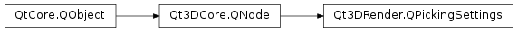

Qt3DRender.QPickingSettings¶
Synopsis¶
Functions¶
- def
faceOrientationPickingMode() - def
pickMethod() - def
pickResultMode() - def
worldSpaceTolerance()
Slots¶
- def
setFaceOrientationPickingMode(faceOrientationPickingMode) - def
setPickMethod(pickMethod) - def
setPickResultMode(pickResultMode) - def
setWorldSpaceTolerance(worldSpaceTolerance)
Signals¶
- def
faceOrientationPickingModeChanged(faceOrientationPickingMode) - def
pickMethodChanged(pickMethod) - def
pickResultModeChanged(pickResult) - def
worldSpaceToleranceChanged(worldSpaceTolerance)
Detailed Description¶
The
QPickingSettingsclass specifies how entity picking is handled.The picking settings determine how the entity picking is handled. For more details about entity picking, see
QObjectPickerandQRayCastercomponent documentation.When using
QObjectPickercomponents, picking is triggered by mouse events.When using
QRayCasterorQScreenRayCastercomponents, picking can be explicitly triggered by the application.In both cases, a ray will be cast through the scene to find geometry intersecting the ray.
-
class
PySide2.Qt3DRender.Qt3DRender.QPickingSettings([parent=nullptr])¶ Parameters: parent – PySide2.Qt3DCore.Qt3DCore::QNode
-
PySide2.Qt3DRender.Qt3DRender.QPickingSettings.PickMethod¶ Specifies the picking method.
Constant Description Qt3DRender.QPickingSettings.BoundingVolumePicking An entity is considered picked if the picking ray intersects the bounding volume of the entity (default). Qt3DRender.QPickingSettings.TrianglePicking An entity is considered picked if the picking ray intersects with any triangle of the entity’s mesh component. Qt3DRender.QPickingSettings.LinePicking An entity is considered picked if the picking ray intersects with any edge of the entity’s mesh component. Qt3DRender.QPickingSettings.PointPicking An entity is considered picked if the picking ray intersects with any point of the entity’s mesh component. Qt3DRender.QPickingSettings.PrimitivePicking An entity is considered picked if the picking ray intersects with any point, edge or triangle of the entity’s mesh component.
-
PySide2.Qt3DRender.Qt3DRender.QPickingSettings.PickResultMode¶ Specifies what is included into the picking results.
Constant Description Qt3DRender.QPickingSettings.NearestPick Only the nearest entity to picking ray origin intersected by the picking ray is picked (default). Qt3DRender.QPickingSettings.AllPicks All entities that intersect the picking ray are picked. See also
Qt3DRender.QPickEvent
-
PySide2.Qt3DRender.Qt3DRender.QPickingSettings.FaceOrientationPickingMode¶ Specifies how face orientation affects triangle picking
Constant Description Qt3DRender.QPickingSettings.FrontFace Only front-facing triangles will be picked (default). Qt3DRender.QPickingSettings.BackFace Only back-facing triangles will be picked. Qt3DRender.QPickingSettings.FrontAndBackFace Both front- and back-facing triangles will be picked.
-
PySide2.Qt3DRender.Qt3DRender.QPickingSettings.faceOrientationPickingMode()¶ Return type: PySide2.Qt3DRender.Qt3DRender::QPickingSettings.FaceOrientationPickingModeSee also
PySide2.Qt3DRender.Qt3DRender::QPickingSettings.setFaceOrientationPickingMode()
-
PySide2.Qt3DRender.Qt3DRender.QPickingSettings.faceOrientationPickingModeChanged(faceOrientationPickingMode)¶ Parameters: faceOrientationPickingMode – PySide2.Qt3DRender.Qt3DRender::QPickingSettings.FaceOrientationPickingMode
-
PySide2.Qt3DRender.Qt3DRender.QPickingSettings.pickMethod()¶ Return type: PySide2.Qt3DRender.Qt3DRender::QPickingSettings.PickMethodSee also
PySide2.Qt3DRender.Qt3DRender::QPickingSettings.setPickMethod()
-
PySide2.Qt3DRender.Qt3DRender.QPickingSettings.pickMethodChanged(pickMethod)¶ Parameters: pickMethod – PySide2.Qt3DRender.Qt3DRender::QPickingSettings.PickMethod
-
PySide2.Qt3DRender.Qt3DRender.QPickingSettings.pickResultMode()¶ Return type: PySide2.Qt3DRender.Qt3DRender::QPickingSettings.PickResultModeSee also
PySide2.Qt3DRender.Qt3DRender::QPickingSettings.setPickResultMode()
-
PySide2.Qt3DRender.Qt3DRender.QPickingSettings.pickResultModeChanged(pickResult)¶ Parameters: pickResult – PySide2.Qt3DRender.Qt3DRender::QPickingSettings.PickResultMode
-
PySide2.Qt3DRender.Qt3DRender.QPickingSettings.setFaceOrientationPickingMode(faceOrientationPickingMode)¶ Parameters: faceOrientationPickingMode – PySide2.Qt3DRender.Qt3DRender::QPickingSettings.FaceOrientationPickingModeSee also
PySide2.Qt3DRender.Qt3DRender::QPickingSettings.faceOrientationPickingMode()
-
PySide2.Qt3DRender.Qt3DRender.QPickingSettings.setPickMethod(pickMethod)¶ Parameters: pickMethod – PySide2.Qt3DRender.Qt3DRender::QPickingSettings.PickMethodSee also
PySide2.Qt3DRender.Qt3DRender::QPickingSettings.pickMethod()
-
PySide2.Qt3DRender.Qt3DRender.QPickingSettings.setPickResultMode(pickResultMode)¶ Parameters: pickResultMode – PySide2.Qt3DRender.Qt3DRender::QPickingSettings.PickResultModeSee also
PySide2.Qt3DRender.Qt3DRender::QPickingSettings.pickResultMode()
-
PySide2.Qt3DRender.Qt3DRender.QPickingSettings.setWorldSpaceTolerance(worldSpaceTolerance)¶ Parameters: worldSpaceTolerance – PySide2.QtCore.floatSets the threshold used for line and point picking to
worldSpaceTolerance.See also
PySide2.Qt3DRender.Qt3DRender::QPickingSettings.worldSpaceTolerance()
-
PySide2.Qt3DRender.Qt3DRender.QPickingSettings.worldSpaceTolerance()¶ Return type: PySide2.QtCore.floatReturns the line and point precision
PySide2.Qt3DRender.Qt3DRender::QPickingSettings.worldSpaceTolerance()See also
PySide2.Qt3DRender.Qt3DRender::QPickingSettings.setWorldSpaceTolerance()
-
PySide2.Qt3DRender.Qt3DRender.QPickingSettings.worldSpaceToleranceChanged(worldSpaceTolerance)¶ Parameters: worldSpaceTolerance – PySide2.QtCore.float
© 2018 The Qt Company Ltd. Documentation contributions included herein are the copyrights of their respective owners. The documentation provided herein is licensed under the terms of the GNU Free Documentation License version 1.3 as published by the Free Software Foundation. Qt and respective logos are trademarks of The Qt Company Ltd. in Finland and/or other countries worldwide. All other trademarks are property of their respective owners.